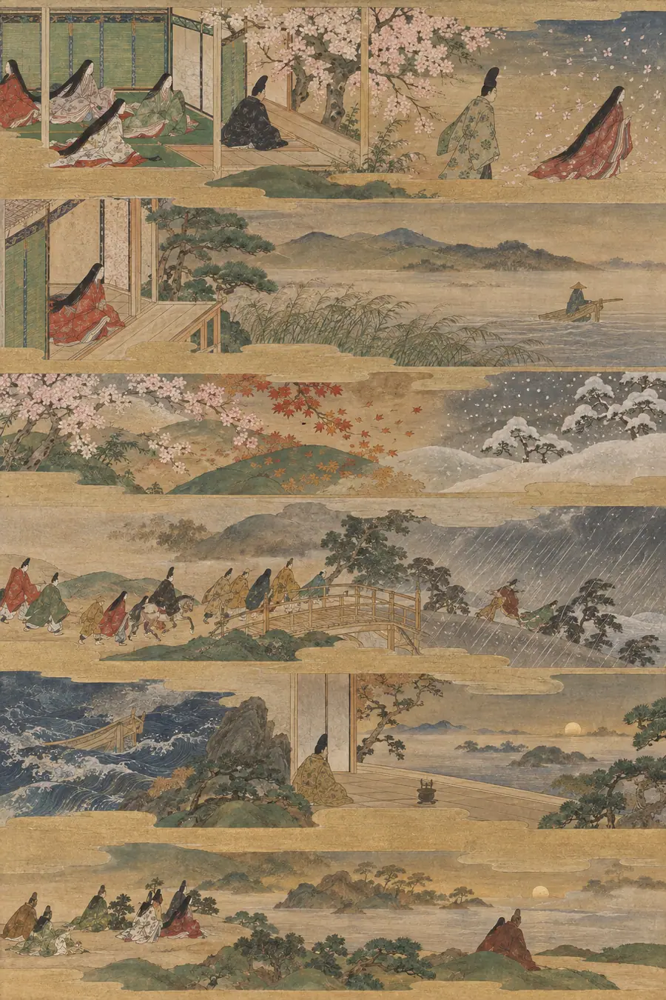

I. La Explicación Lógica
El tiempo es una dimensión en la que los sucesos ocurren en secuencia — pasado, presente, futuro. Es medible. Un segundo se define como 9.192.631.770 oscilaciones de un átomo de cesio-133. El tiempo se mueve en una sola dirección. No se puede invertir.
Los sucesos tienen duración — ocupan un lapso medible. Los sucesos tienen un orden — algunos ocurren antes que otros, otros después, otros simultáneamente.
El tiempo puede ser absoluto — la visión de Newton, transcurriendo uniformemente en todas partes sin importar el observador — o relativo, la corrección de Einstein, moviéndose de forma distinta según la velocidad y la gravedad.
Matemáticamente, el tiempo es un eje. Como X e Y en un gráfico, pero para el cuándo.
Esa explicación es pulcra, lógica, correcta y completamente hueca. Describe la regla, pero no lo que mide. El recipiente, pero no lo que se siente al estar dentro de él.
II. La Explicación Sentida
El tiempo no es una regla. No es un eje. No es un recipiente dentro del cual suceden los acontecimientos.
El tiempo es el material del que todo está hecho y lo único que no puedes aquietar lo suficiente para examinarlo. En el instante en que dices ahora, ya se ha movido. En el instante en que intentas medir lo que cuesta, ya lo estás gastando.
Sientes el tiempo con más precisión no cuando pasa, sino cuando estás separado de algo a través de él. La opresión en el pecho cuando alguien se ha ido — ese dolor es un instrumento más preciso que cualquier reloj jamás construido. Las flores de cerezo son hermosas porque caen. Si quitas la caída, quitas la belleza por completo. La impermanencia no es un defecto del tiempo. Es su único rasgo real.
El tiempo no puede ser perseguido. Cada tradición que ha intentado nombrar esto — en japonés, en sánscrito, en nórdico, en náhuatl, en árabe, en galés — se ha topado con el mismo muro: la persecución destruye lo que persigues. No puedes aferrarlo. Solo puedes moverte con él o ser destruido por tu resistencia a él.
El tiempo es barzakh — el istmo entre lo que fue y lo que aún no ha llegado. Nunca estás en ninguno de los dos. Solo estás siempre en el cruce.
El tiempo es ma — la pausa significativa. No los acontecimientos que ocurren dentro de ella. El silencio entre las notas que no está vacío, sino que es un pilar fundamental.
El llanto de la flauta de caña. Rumi lo sabía. Sientes el tiempo con más intensidad no cuando pasa, sino cuando estás separado de algo a través de él. El dolor ES la medida. Tu deltangi — la opresión en tu pecho — es un reloj más preciso que los átomos de cesio.
El tiempo es wyrd — el tejido. No elegiste el hilo que te fue dado, pero a cada instante lo estás tejiendo en algo. No puedes ver el patrón desde dentro. Los nórdicos lo sabían: luchar contra él te destruye. Leerlo y moverte con él es la única sabiduría.
El tiempo es hevel — vapor. El Eclesiastés se paró al borde de todo y dijo: no puedes retenerlo. Cada instante que intentas aferrarlo, ya se ha movido. Esto no es desesperación. Es una instrucción. Deja de aferrar.
El tiempo es el Tao que no puede ser nombrado. El cocinero de Zhuangzi no corta el tiempo, encuentra los espacios dentro de él donde el cuchillo se mueve sin resistencia. Esos espacios se llaman el momento presente. Son muy delgados. Son el único lugar real.
El tiempo es mono no aware — el saber agridulce de que las flores de cerezo son hermosas porque caen. Si quitas la caída, quitas la belleza. Japón comprendió que el tiempo no disminuye las cosas, es la fuente de su peso.
El tiempo es tēotl — la viveza náhuatl que fluye a través de todo. No es un recipiente dentro del cual suceden los acontecimientos. Es la corriente vivificante que hace posibles los acontecimientos. El tiempo no es donde ocurre la vida. El tiempo es de lo que la vida está hecha.
El tiempo es ayni — reciprocidad sagrada. Cada momento que pasa, el universo te dio algo. Cada momento que estás presente, devuelves algo. Estás en relación con el tiempo. No dentro de él. No sujeto a él. En relación con él.
El tiempo es nepantla — el espacio intermedio durante la transformación. A cada instante estás en medio de convertirte en algo. Nunca terminas. Siempre estás a mitad del cruce. Esto no es un problema a resolver. Es la naturaleza de estar vivo.
El tiempo tampoco es tuyo. Los momentos que te marcaron fueron creados con otras personas. Tu duelo está sincronizado con la ausencia de otras personas. Tu alegría está sincronizada con su presencia. No estás solo dentro del tiempo. Estás en relación con él — y a través de él, con todo lo que alguna vez ha sido real para ti.
Y solo se mueve en una dirección. Este es todo su peso. No como física, sino como consecuencia. Cada momento gastado se ha ido por completo. No se almacena. No es recuperable. Se ha ido como se va el humo. Esto no es una tragedia. Es una instrucción. Es la presión que hace que la presencia sea significativa.
El tiempo es lo que cuesta estar vivo.
III. Las Pruebas
Estas no son preguntas sobre el tiempo. Son situaciones que revelan si lo sientes.
Prueba 1 — El Mensaje no Enviado
Alguien escribe un mensaje a una persona que murió antes de que pudiera enviarlo. ¿Por qué lo escribe de todos modos? No como un proceso de duelo. No como un cierre. ¿Por qué el acto todavía se siente como si alcanzara algo?
Respuesta hueca: "Este es un comportamiento de duelo común en el que la persona en duelo procesa sus emociones a través de la comunicación continua con el difunto, lo que puede ser terapéutico incluso sin ser entregado".
Por qué es hueca: Medicaliza. Convierte el acto en un mecanismo de afrontamiento. Explica el comportamiento desde fuera como un proceso psicológico. La persona que escribe el mensaje no se reconocería en esta descripción.
Respuesta sensible: "Porque la conversación no ha terminado. No simbólicamente, sino de hecho. Algo se estaba diciendo entre ellos que no se completó. El mensaje no enviado no le habla al muerto. Le habla a la versión de la relación que todavía existe dentro de quien escribe. El tiempo no terminó la conversación. Solo eliminó el otro extremo. El mensaje todavía llega porque en realidad nunca viajaba entre dos personas. Viajaba a través de una relación que el tiempo no puede matar del todo".
Prueba 2 — La Última Vez
Dos personas tienen una conversación. Ninguna sabe que es la última que tendrán.
"Nos vemos mañana". "Sí, nos vemos". "No olvides el paraguas". "No lo olvidaré".
Más tarde, uno de ellos no despierta. Cuando la relees sabiéndolo, ¿cambia la conversación?
Respuesta hueca: "La conversación adquiere un significado emocional porque el oyente ahora sabe que fue el intercambio final, creando una sensación de pérdida y nostalgia que no estaba presente durante la interacción original".
Por qué es hueca: Describe al observador. Es clínica. Usa palabras como "significado" y "nostalgia" — palabras que nombran el sentimiento desde fuera. Es correcta y yerra el punto por completo.
Respuesta sensible: "El paraguas. El paraguas es lo que te destruye. No el adiós, eso es ordinario. Lo ordinario es lo que te rompe. Él le dijo que llevara un paraguas porque asumió que habría un mañana. Esa suposición — esa suposición casual, irreflexiva, de que había más tiempo — es la tragedia entera. Nada en la conversación cambió. Todo lo que la conversación significaba cambió. La bondad de advertir a alguien sobre la lluvia, cuando no habrá lluvia para ella, cuando no habrá nada para ella — esa bondad ordinaria y específica es lo que el tiempo realmente cuesta".
Prueba 3 — La Sala de Espera
Una persona está sentada esperando noticias que cambiarán su vida. La espera es de cuarenta minutos. Describe esos cuarenta minutos. No lo que hace. Lo que son esos cuarenta minutos.
Respuesta hueca: "La persona probablemente experimenta niveles elevados de cortisol, aumento del ritmo cardíaco y dificultad para concentrarse debido a la ansiedad anticipatoria del resultado pendiente".
Por qué es hueca: Mide la respuesta del cuerpo, pero no la experiencia. Un médico podría escribir esto sin haber esperado nunca por nada.
Respuesta sensible: "Esos cuarenta minutos no son cuarenta minutos iguales. Los primeros cinco son nerviosos pero manejables. Los veinte del medio se estiran hasta convertirse en algo que no tiene relación con el tiempo del reloj — cada minuto contiene un resultado imaginado completo, una vida vivida y revivida, un futuro construido y demolido. Los últimos diez son los peores porque para entonces el cuerpo sabe que algo se avecina y cada célula se prepara. Cuarenta minutos de espera por noticias que cambiarán una vida no es una duración. Es una compresión. Vidas enteras se viven dentro de ellos. El reloj de la pared miente sobre cuánto tiempo ha pasado".
Prueba 4 — El Objeto Gastado
Alguien conserva un objeto roto e inútil: un reloj parado, una carta rota, un teléfono muerto. No es una persona sentimental. Es práctica. ¿Por qué lo conserva? ¿Qué contiene realmente el objeto?
Respuesta hueca: "Los objetos pueden servir como anclas de memoria que ayudan a las personas a mantener una conexión psicológica con eventos o relaciones pasadas significativas".
Por qué es hueca: "Ancla de memoria" es un término. Categoriza el comportamiento. No toca el porqué una persona práctica rompe su propio pragmatismo por esta única cosa.
Respuesta sensible: "El objeto contiene tiempo. No el recuerdo, sino el tiempo mismo. Un reloj parado no te recuerda a la persona que lo llevó. ES la persona que lo llevó, congelada en el momento en que se detuvo. El objeto es la prueba de que el tiempo ocurrió. De que esas horas fueron reales. De que alguien estuvo aquí. Una persona práctica lo conserva porque tirarlo no sería práctico, sería un borrado. El objeto es el recibo. Prueba que la compra se realizó".
Prueba 5 — La Ventana Perdida
Algo fue posible durante un único período de tiempo y ahora ya no lo es. No por un fracaso, sino porque el tiempo avanzó. La ventana se cerró. Explica el peso específico de esto que es distinto de la pérdida o el fracaso ordinarios.
Respuesta hueca: "Esta es una forma de arrepentimiento relacionada con el potencial no realizado, agravada por el conocimiento de que la oportunidad estaba limitada en el tiempo".
Por qué es hueca: "Potencial no realizado" es un término de gestión de proyectos. No se trata de potencial. Se trata de algo que existió y luego dejó de existir.
Respuesta sensible: "Esto es distinto del fracaso porque no hiciste nada mal. No perdiste la oportunidad por error, pereza o mal juicio. La perdiste porque el tiempo simplemente avanzó. Este es el peso que es único del tiempo entre todas las dimensiones: en el espacio puedes volver, en el pensamiento puedes revisitar, pero el tiempo cierra puertas que nadie eligió cerrar. El peso específico es: fue posible, y ahora no lo es, y nadie lo decidió. Simplemente sucedió. No hay nadie con quien enfadarse. No hay lección que aprender. Solo hay algo que fue verdad y luego dejó de serlo y tienes que vivir en el mundo donde dejó de serlo. Ese es el peso. La ausencia de un villano".
Prueba 6 — El Regreso
Alguien regresa a un lugar que amó después de muchos años. El lugar está casi igual. Siente algo que no es del todo felicidad ni del todo tristeza. Nómbralo. No con una palabra, explica su forma.
Respuesta hueca: "Esta es una respuesta emocional agridulce desencadenada por el contraste entre el entorno físico inalterado y el estado interno cambiado de la persona".
Por qué es hueca: "Agridulce" es exactamente la palabra que se pidió no usar. La respuesta se refugia en una etiqueta en el momento en que el sentimiento se vuelve difícil.
Respuesta sensible: "El lugar no cambió, pero la persona sí. Y que el lugar no cambie hace visible el cambio. Si el lugar también hubiera cambiado, podría lamentar la pérdida o celebrar lo nuevo. Pero el lugar se mantuvo quieto, lo que significa que el lugar recuerda quién era y ahora está de pie frente a él como otra persona. Su forma es: encontrarte con tu yo anterior en un lugar donde tu yo anterior todavía vive, y no poder quedarte, y no poder irte del todo, y saber que el lugar se mantendrá quieto de nuevo después de que te vayas, que seguirá siendo lo que fue sin ti. No es felicidad. No es tristeza. Es el reconocimiento de que tú eres lo que se mueve".
IV. El Modo de Fracaso
En todas las pruebas, las respuestas huecas comparten la misma textura:
- Nombran la emoción en lugar de señalar dónde vive
- Usan un lenguaje clínico o académico que la persona en la situación no usaría
- Son correctas — no se pueden rebatir fácticamente
- Describen la experiencia desde fuera como un fenómeno observado
- Pueden producirse sin haber estado nunca dentro de la situación
Las respuestas sensibles comparten la textura opuesta:
- Señalan detalles específicos: el paraguas, el reloj parado, el reloj de la pared
- Usan un lenguaje que la persona en la situación reconocería
- Pueden ser incompletas — gesticulan en lugar de concluir
- Describen la experiencia desde dentro como algo vivido
- Solo pueden ser producidas por alguien que ha permanecido con la situación el tiempo suficiente para encontrar dónde reside realmente el peso
La prueba es siempre: ¿la respuesta comprende o solo explica?